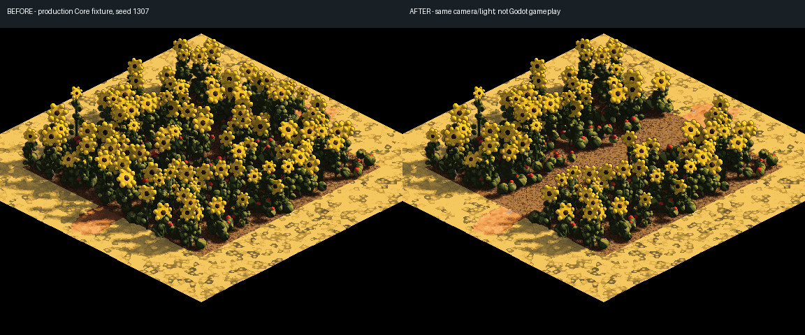

3 November 2026
Room between the sunflowers
3 November 2026
A garden path should still look like somewhere you can walk. The sunflowers had been keeping their own rules: broad leaves, tall yellow heads and a carpet of little red flowers could grow straight across a lane.
They now leave room for the whole plant. The low flowers respect that space too, so clearing the stalks does not leave a second carpet hiding the route. Raised planters keep their flowers when the complete plant fits inside the rim.

This is a controlled bed rendered with the game's Core renderer, using the same seed, camera and light. It is not a gameplay capture. The flowers keep their familiar shapes; the difference is the space between them.
Native review at ordinary play zoom remains ahead, including the older Wainscross garden work. This change checks the geometry around lanes, doorways, gates and stairs; it does not yet establish how a moving player reads every garden.